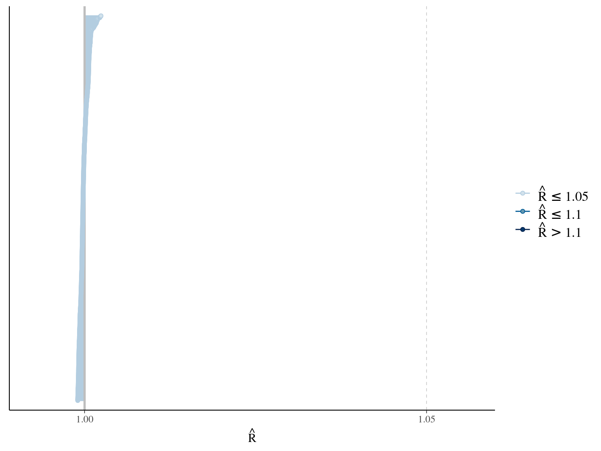
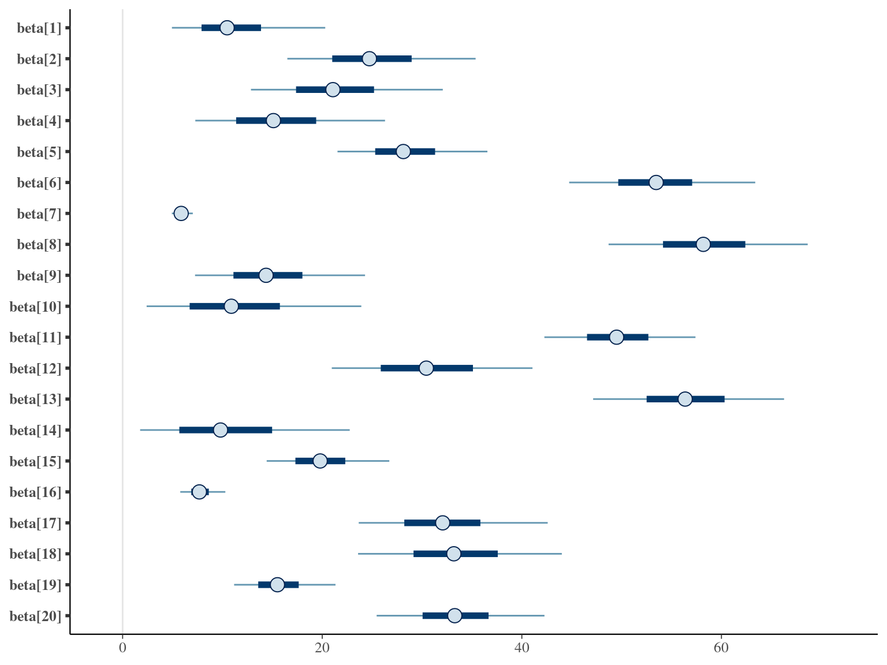
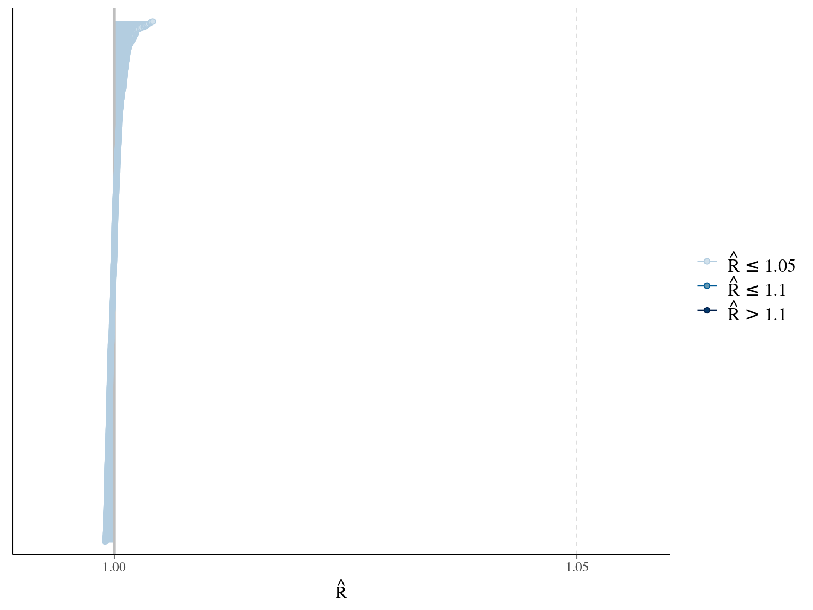
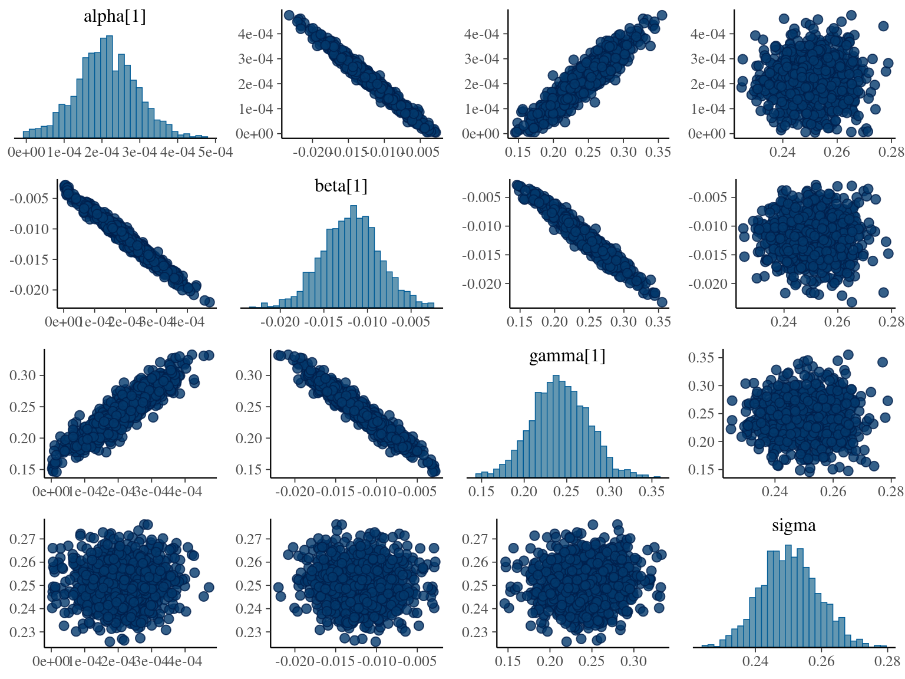
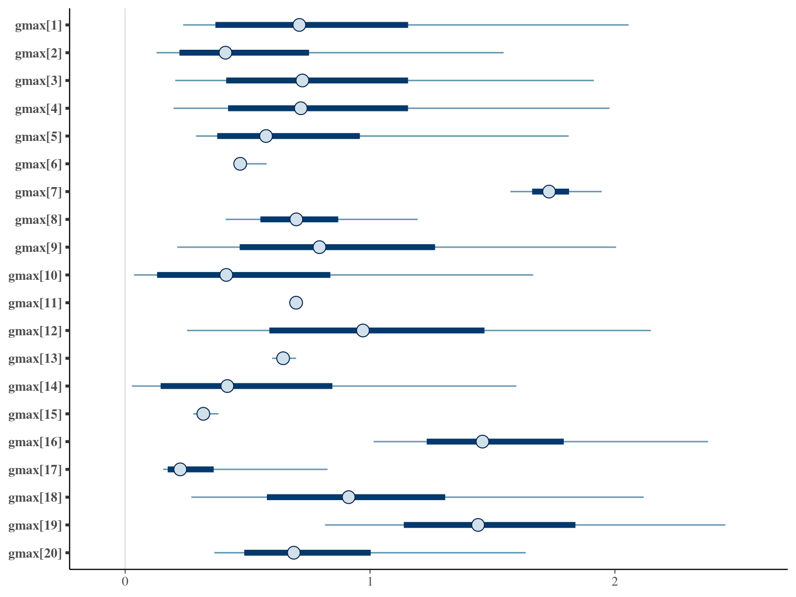
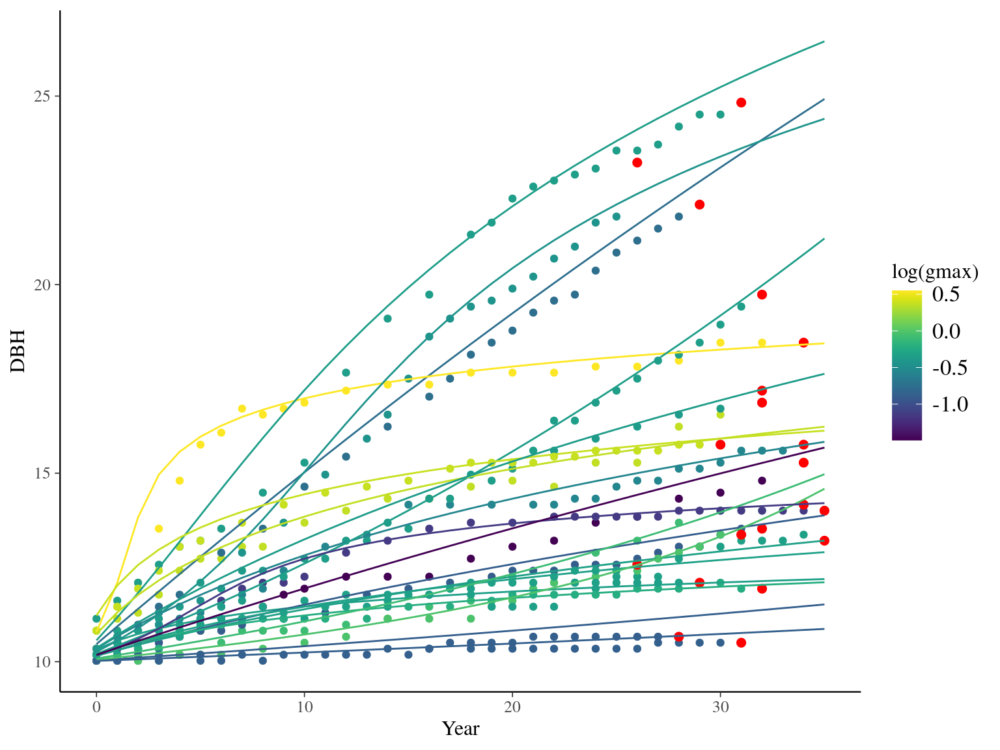

Chapter 1 Model choice
In this chapter, I looked for the best model shape based on quality of fit, cross-validation (LOO), and prediction (RMSEP). The result is summarised in Table 1.1.
1.1 Data
I used reduced data to explore the model form. I focused on trees at 20 meters from any plot edges for neighbourhood effect. I used only recruited trees in the censuses with at least 20 measurements of diameter at breast height (DBH, cm). And, I randomly selected 20 trees for lightweight training data. I further selected the last diameter measured for each individual as an evaluation data not used for model fitting (Fig. 1.1).

Figure 1.1: Tree diameter trajectories in training data. Color represent individuals and the red point the data used for evaluation.
1.2 Michaelis Menten
The first tested model is a Michaelis Menten model using time \(t\) since recruitment (DBH=10cm) for each individual tree \(i\):
\[DBH_{i,t} \sim \mathcal N (10 + \frac{\alpha_i \times t}{\beta_i+t}, \sigma)\] where \(\alpha\) is individual maximum diameter and \(\beta\) the year since recruitment when the individual reaches half the maximum diameter value. The model correctly converged (\(\hat R < 1.05\)) with an acceptable but marked correlation between \(alpha\) and \(beta\). \(beta\) posteriors have not too much uncertainty and are varying widely among individuals. Finally predictions of the diameter trajectories by the model are good.



1.3 Gompertz
The second tested model uses a Gompertz model (Hérault et al. 2011), were the diameter of individual \(i\) at year \(t\) is the individual diameter from previous year plus its annual growth:
\[DBH_{i,s,t} \sim \mathcal N (DBH_{i,t-i} + Gmax_i \times exp(-\frac12.[\frac{log(\frac{DBH_{i,t-i}}{100.Dopt_i})}{Ks_i}]^2)\times\Delta t, \sigma)\]
The annual growth rate for individual \(i\) at year \(y\) with a diameter of \(DBH_{y,i}\) is defined following a Gompertz model (Gompertz 1825) already identified as the best model for growth-trajectories in Paracou (Hérault et al. 2011), where \(Gmax\) is the maximum growth potential, \(Dopt\) is the optimal diameter at which the individual reaches its maximum growth potential, and \(Ks\) is the kurtosis defining the width of the bell-shaped growth-trajectory (see figure 1 in Hérault et al. 2011). On model parameter diverged (\(\hat R > 1.05\)) with no correlations among parameters. \(gmax\) posteriors are highly uncertain and does not vary widely among individuals. Finally predictions of the diameter trajectories by the model are overfitting because the model uses the diameter from previous census reporting the measurement error from one year to the other.


1.4 Lognormal
The third tested model is a lognormal model using time \(t\) since recruitment (DBH=10cm) for each individual tree \(i\):
\[DBH_{i,t} \sim \mathcal N (10 +\beta \times log(t), \sigma)\] where \(\beta\) is the slope of year since recruitment effect on the log response of diameter to time. The model correctly converged (\(\hat R < 1.05\)) with no correlations among parameters. \(beta\) posteriors have not too much uncertainty and are varying widely among individuals. Finally predictions of the diameter trajectories by the model are a bit far from observations.


1.5 Polynomial
The fourth tested model is a third degree polynomial model using time \(t\) since recruitment (DBH=10cm) for each individual tree \(i\):
\[DBH_{i,t} \sim \mathcal N (\alpha \times t^3 + \beta_i \times t^2+ \gamma_i \times t + 10, \sigma)\]
where \(\alpha\), \(\beta\), and \(\gamma\) are the slope of year since recruitment effects to its cube, square or identity. The model correctly converged (\(\hat R < 1.05\)) with an acceptable but marked correlation between \(\alpha\), \(\beta\), and \(\gamma\). \(gamma\) posteriors have not too much uncertainty and are varying widely among individuals. Finally predictions of the diameter trajectories by the model are a bit overfitted with unrealistic inflections at the end of the trajectories





1.6 Weibul
The fifth tested model is a Weibul model using time \(t\) since recruitment (DBH=10cm) for each individual tree \(i\):
\[DBH_{i,t} \sim \mathcal N (10 + \alpha \times (1 − e^{-t_i/\beta}) , \sigma)\] The model correctly converged (\(\hat R < 1.05\)) with an acceptable but marked correlation between \(\alpha\) and \(\beta\). \(beta\) posteriors have not too much uncertainty and are varying widely among individuals. Finally predictions of the diameter trajectories by the model are good.
1.7 Amani
The sixth tested model was developed by Amani et al. (2021) and uses time \(t\) since recruitment (DBH=10cm) for each individual tree \(i\):
\[DBH_{i,t} \sim \mathcal N (\alpha \times (1 − e^{-\lambda \times (\frac{t_i}{\theta})^\beta}) , \sigma)\] The model correctly converged (\(\hat R < 1.05\)) with an acceptable but marked correlation between \(\alpha\), \(\beta\), and \(\lambda\). \(\theta\) posteriors are highly uncertain and does not vary widely among individuals. Finally predictions of the diameter trajectories by the model are good but the inflection point if only used in the yellow trajectory more probably due to a change of POM than real growth change.
1.8 Gompertz sum
The seventh tested model uses a Gompertz model (Hérault et al. 2011), were the diameter of individual \(i\) at year \(t\) is the sum of annual growth from \(t0\) to \(t\):
\[DBH_{t,i} \sim \mathcal N (10 + gmax_i \times \sum _{y=1|DBH_{t=0}} ^{y=t} exp(-\frac12.[\frac{log(\frac{DBH_{t,i}}{100.Dopt_i})}{Ks_i}]^2)), \sigma)\]
The annual growth rate for individual \(i\) at year \(y\) with a diameter of \(DBH_{y,i}\) is defined following a Gompertz model (Gompertz 1825) already identified as the best model for growth-trajectories in Paracou (Hérault et al. 2011), where \(Gmax\) is the maximum growth potential, \(Dopt\) is the optimal diameter at which the individual reaches its maximum growth potential, and \(Ks\) is the kurtosis defining the width of the bell-shaped growth-trajectory (see figure 1 in Hérault et al. 2011). The model correctly converged (\(\hat R < 1.05\)) with an acceptable but marked correlation between \(dopt\) and \(ks\). \(gmax\) posteriors have logical uncertainty but are varying widely among individuals. Finally predictions of the diameter trajectories by the model are good and realistic. Moreover, model errors do not show temporal autocorrelation per individual.



1.9 Comparisons
The Gompertz sum model has the best prediction (lowest RMSEP) associated to the second best evaluation (second lowest loo epld), knowing that the first one use every year diameter and overfit, and a decent computing time. This is the best model that I’ll use in next steps.
| Model | RMSEP | LOO ELDP | Elapsed time |
|---|---|---|---|
| Michaelis Menten | 6.8055400 | 214.3796 | 4.658 |
| Gompertz | 0.3945505 | 253.4165 | 50.508 |
| Lognormal | 1.6143450 | 224.0448 | 1.473 |
| Polynomial | 0.3484090 | 228.1646 | 39.918 |
| Weibul | 0.7914120 | 218.0608 | 6.185 |
| Amani | 6.3461250 | 243.3392 | 93.633 |
| Gompertz sum | 0.4266840 | 248.9798 | 208.172 |

Figure 1.2: Models root mean square error of predicition. The X scale is sqaure-root transformed.
| elpd_diff | se_diff | elpd_loo | se_elpd_loo | p_loo | se_p_loo | looic | se_looic | |
|---|---|---|---|---|---|---|---|---|
| Gompertz | 0.000000 | 0.000000 | 253.4165 | 5.289775 | 3.677858 | 0.1734296 | -506.8329 | 10.57955 |
| Gompertz sum | -4.436612 | 5.580873 | 248.9798 | 5.119035 | 4.585733 | 0.1731198 | -497.9597 | 10.23807 |
| Amani | -10.077260 | 5.973658 | 243.3392 | 5.300027 | 5.546408 | 0.1846141 | -486.6784 | 10.60005 |
| Polynomial | -25.251839 | 5.920798 | 228.1646 | 5.071129 | 5.282179 | 0.1782722 | -456.3292 | 10.14226 |
| Lognormal | -29.371666 | 7.170428 | 224.0448 | 5.272432 | 2.126424 | 0.0725016 | -448.0896 | 10.54486 |
| Weibul | -35.355644 | 6.867527 | 218.0608 | 5.474185 | 2.973836 | 0.1021080 | -436.1216 | 10.94837 |
| Michaelis Menten | -39.036891 | 7.029287 | 214.3796 | 5.441283 | 2.801023 | 0.0923876 | -428.7591 | 10.88257 |

Figure 1.3: Model elapsed time.
References
Amani, B.H.K., N’Guessan, A.E., Derroire, G., N’dja, J.K., Elogne, A.G.M., Traoré, K., Zo-Bi, I.C. & Hérault, B. (2021). The potential of secondary forests to restore biodiversity of the lost forests in semi-deciduous West Africa. Biological Conservation, 259.
Gompertz, B. (1825). On the nature of the function expressive of the law of humanmortality, and on a newmode of determining the value of life contingencies. Philosophical Transactions of the Royal Society of London, 115, 513–583. Retrieved from https://www.tandfonline.com/doi/full/10.1080/14786445908642737
Hérault, B., Bachelot, B., Poorter, L., Rossi, V., Bongers, F., Chave, J., Paine, C.E.T., Wagner, F. & Baraloto, C. (2011). Functional traits shape ontogenetic growth trajectories of rain forest tree species. Journal of Ecology, 99, 1431–1440.